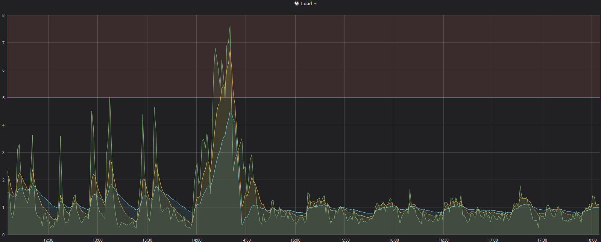
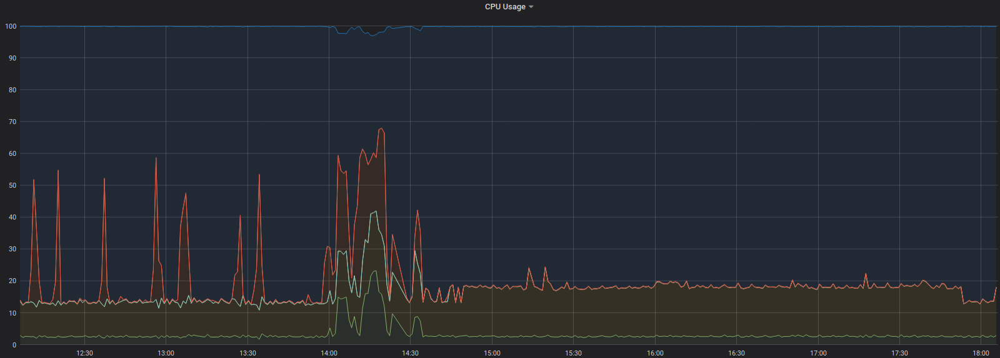

Raspberry mit schnellem Massenspeicher

Ich habe auf meinem Raspberry 3 eine Instanz InfluxDB und Grafana fürs Monitoring installiert. Diese Konfiguration läuft nun bereits verhältnismäßig lange und ich stellte erste Abnutzungserscheinungen fest...
Das Problem, das immer häufiger auftrat, war anhand der Daten in Grafana deutlich zu sehen: Das Gesamtsystem zeigte immer wieder und immer häufiger Phasen, in denen die Load extrem emporschnellte und dort mehrere Minuten - bis zu 20 - verharrte.
Die Auslastung der CPU änderte sich demgegenüber nur wenig. Ich begann zu vermuten, dass die SD-Karte durch die vielen Schreibzyklen in InfluxDB begann, auszufallen und daher die Schreibvorgänge immer länger dauerten - das würde auch die hohe Load erklären, die mit einer kaum gesteigerten CPU-Last einherging: Wenn das System auf den Massenspeicher wartet, kann es keine anderen Operationen ausführen.
Dadurch kam ich darauf, dass die gestiegene Load beinahe gänzlich auf IO-Load zurückzuführen war. Das Problem daran war, dass auf meinem Raspi auch Pihole und mein eigener mein eigener DNS-Resolver für mein Heimnetz und der VPN-Endpunkt zum Zugriff von außen läuft. All diese Dinge funktionierten nicht mehr, wenn das System wieder in eine solche Phase extrem hoher IO-Load eintrat. Besonders die dann nicht mehr funktionierenden DNS-Abfragen nervten mich gewaltig.
Daher begann ich Überlegungen anzustellen, wie ich dieses Problem entschärfen und vielleicht sogar lösen könnte. Mein erster Ansatz war, herauszufinden ob wirklich InfluxDB der Auslöser war. Dafür deaktivierte ich den Dienst für einige Stunden und beobachtete das Systemverhalten. Ziemlich schnell war klar, dass ich den Auslöser gefunden hatte. Was aber löste nun die Last eigentlich aus? Auch das war recht schnell erkannt: Schuld war das Management der Retention-Policies zusammen mit dem Shard-Management. Ich konfigurierte das System so um, dass recht kleine Shards benutzt wurden, die ein Aufräumen und damit die hohe IO-Last zwar häufiger entstehen lassen würden, aber nicht mehr so lange.
Damit konnte ich das Problem ein wenig entschärfen, es blieb aber weiter bestehen.
Daher begann ich über einen radikalen Schritt nachzudenken: Wie wäre es, wenn der System-Datenträger nicht länger eine SD-Karte wäre? Ich fand einige Ressourcen im Netz, die erklärten, dass das relativ einfach zu bewerkstelligen wäre: Dann würde dieser Datenträger über USB am Raspi angeschlosen sein und die IO-Leistung des Massenspeichers deutlich über der der SD-Karte liegen.
Ich hatte noch eine alte 2.5-Zoll Magnetplatte mit 500 GB Speicherplatz im Schrank. Mein erster Versuch war der Anschluss und die Nutzung dieser Platte. Da ich allerdings an diesem Raspi auch noch einen DVB-T-Stick für die Beobachtung vorbeifliegender Flugzeuge über die Auswertung von ADS-B-Botschaften mittels SDR betreibe, bootete der Raspi nach Anschluss der Festplatte nicht einmal mehr, da die durch das Netzteil gelieferten 3 Ampere nicht zur Speisung aller Komponenten ausreichte.
Nachdem ich mich vergewissert hatte, dass 3 Ampere die Obergrenze für Netzteile für den Raspi darstellten überlegte ich mir einen Plan B: Generell gilt ja, dass SSDs als Massenspeicher weniger Strom verbrauchen als Magnetplatten. Könnte ich also eine kleine und billige SSD benutzen? Mittels einer kurzen Recherche stellte ich fest: das ginge durchaus. Ich bestellte daher - auch weil sich der Preis zu diesem Zeitpunkt annähernd halbiert hatte - einen USB-SSD-Stick zum Anschluss an den Raspi. Damit war das Strom-Problem tatsächlich gelöst (allerdings funktioniert die Konfiguration mit Raspi, SDR und SSD nach wie vor nicht an einem Netzteil, das nur 2 Ampere liefert, eines mit 2.5 Ampere konnte ich mangels Verfügbarkeit in der Bastelkiste nicht testen...) und nach Einrichtung als Systemdatenträger sank die IO-Last in den Bereich, in dem sie kein Problem für die anderen Dienste darstellte, während die CPU-Last ungefähr gleich blieb.
Zur Verdeutlichung hier noch zwei Screenshots aus Grafana:

Die Load änderte sich durch die neue Systemplatte dramatisch - auch mit den zyklischen Clean-Ups in Influx war jetzt keine Beeinträchtigung anderer Dienste mehr zu beobachten...

Die CPU-Auslastung blieb im Großen und Ganzen gleichIch habe noch einen Benchmark für die SSD am Raspi durchgeführt - da es sich hier um ein Modell 3 handelte, wird das Potential natürlich nicht annähernd ausgereizt...
Category Test Result
HDParm Disk Read 22.97 MB/s
HDParm Cached Disk Read 24.72 MB/s
DD Disk Write 27.5 MB/s
FIO 4k random read 1862 IOPS (7450 KB/s)
FIO 4k random write 2370 IOPS (9481 KB/s)
IOZone 4k read 10884 KB/s
IOZone 4k write 9056 KB/s
IOZone 4k random read 7375 KB/s
IOZone 4k random write 9451 KB/s
Artikel, die hierher verlinken
Raspi booten übers Netz mit PXE und NFS
17.12.2020
Nach meinen Experimenten mit einem Rock64 war ein Raspi 3B+ für Experimente freigeworden - und in Vorbereitung meiner durch eben diesem Rock64 inspirierten Projektideen für diesen Winter wollte ich einiges ausprobieren - zuerst das Booten über das Netzwerk mit persistentem Speicher im Netz - so dass am Pi gar kein Massenspeicher mehr benötigt würde - weder als SD-Karte noch sonstwie.
Günstiges Arm64-Board mit Raspi-Formfaktor
12.12.2020
Ich habe ein neues Gerät in meinem Hardware-Zoo: Nachdem ich bereits einigeErfahrungen mit Raspis sammeln konnte, machte mich ein Kollege neulich auf eine günstige Variante aufmerksam, Erfahrungen mit ARM64 zu sammeln...
Mosquitto MQTT Broker on Docker@Raspi
25.07.2020
Nachdem ich in letzter Zeit wieder verstärkt neue Dienste in meinen Docker-Zoo integriert habe, habe ich nach Fertigstellung der ersten Version meiner Interpretation des BlinkStick einen weiteren Dienst "containerisiert"
Docker auf Raspberry Pi Model 3B+
07.06.2020
Nachdem ich neulich über neues in meinem Docker-Zoo berichtete und überneulich eine Idee zur Aufwertung und Beschleunigung meines Raspberry erfolgreich in die Tat umsetzte, war der nächste Schritt klar...


Vor 5 Jahren hier im Blog
-
Java9 Umstellung
16.04.2018
Die Umstellung auf Java9 in meinen eigenen Projekten ist abgeschlossen
Weiterlesen...
Tags
Android Basteln C und C++ Chaos Datenbanken Docker dWb+ ESP Wifi Garten Geo Git(lab|hub) Go GUI Gui Hardware Java Jupyter Komponenten Links Linux Markdown Markup Music Numerik PKI-X.509-CA Python QBrowser Rants Raspi Revisited Security Software-Test sQLshell TeleGrafana Verschiedenes Video Virtualisierung Windows Upcoming...
Neueste Artikel
- Raspberry Pi 3B mit 64-Bit-Kernel
Ich habe neulich wieder einmal Probleme mit meinem Raspi gehabt - oder genauer gesagt mit der darauf laufenden Influx-Installation.
Weiterlesen... - memfd Shell Code Injection unter Linux
Ich stieß neulich auf einen Python-OneLiner, der sich mit der Erstellung und Nutzung von memfd's befasste: Filedeskriptoren, die nur im RAM eines Rechners existieren, sich aber sonst wie normale Dateien verhalten. Wenn man ausführbaren Code in einem solchen File speichert, kann man dieses sogar ausführen. Es bleiben aber keine Spuren auf dem Rechner zurück, nachdem er ausgeschaltet wurde.
Weiterlesen... - Kleinstaaterei - ein Zukunftskonzept?
Als ich vor ein paar Wochen las, dass Wyoming den Verkauf von elektrischen Fahrzeugen verbieten wollte, fühlte ich - der ich in den Grenzen des letzten aufgelösten deutschen Fürstentums wohne - die Kleinstaaterei zurückkehren.
Weiterlesen...
Manche nennen es Blog, manche Web-Seite - ich schreibe hier hin und wieder über meine Erlebnisse, Rückschläge und Erleuchtungen bei meinen Hobbies.
Wer daran teilhaben und eventuell sogar davon profitieren möchte, muß damit leben, daß ich hin und wieder kleine Ausflüge in Bereiche mache, die nichts mit IT, Administration oder Softwareentwicklung zu tun haben.
Ich wünsche allen Lesern viel Spaß und hin und wieder einen kleinen AHA!-Effekt...
PS: Meine öffentlichen GitHub-Repositories findet man hier - meine öffentlichen GitLab-Repositories finden sich dagegen hier.